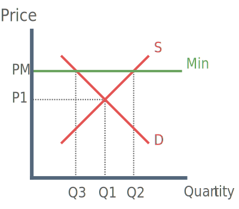

Causes of Poverty
1) Poor education
Poor quality of education or shortage of education resources lead to fewer opportunities. Fewer opportunities often results in lower wages and less tax receipts for the government. Lower govenment revenue results in less being invested in education and an overall less qualified population.
2) Old age
Old age is a main cause of poverty because many old people rely on the state pension as their main form of income, rather than a private pension.
Since the 1980's state pensions have been linked to the rate of inflation, measured by changes in the retail price index (RPI). Therefore pensions do not rise in line with the general increase in standards of living.
3) Unemployment
Unemployment benefits are generally lower than the income a worker would have earned before becoming unemployed. An increase in unemployment will therefore increase poverty.
The recent cap on unemployment related benefits will further increase the poverty arising from unemployment.
4) Low wages
The low-waged includes workers in unskilled occupations or skilled workers who have lost their jobs and are forced to trade down into more unskilled activities. Low wages will result in relative poverty for the low-waged if higher paying occupations offer a far great salary.
5) Single parenthood
In a single parent household there is only one earner. Some parents may not be able to work, as they cannot afford childcare. Other parents who do work may spend a large proportion of their wages on childcare.
6) Change in demand for labour
This point is best explained with an example such as the decline of the manufacturing industry in the U.K. which has left workers with non-transferable skills in structural unemployment.
At the other end of the spectrum, there has been an increase in demand for skilled workers, thus boosting wages and increasing relative poverty.
Methods of Reducing Poverty
National Minimum Wage
A statutory minimum wage introduced to boost the earnings of the low paid.

Advantages of National Minimum Wage
1) Reduced Poverty
Increases the wage of the lowest paid reduces the gap between rich and poor, in turn reducing relative poverty. If NMW is above the living wage, absolute poverty will also be reduced.
2) Increased productivity
Efficient wage theory states that higher wages incentivise people to work harder.
3) Counterbalance the effect of Monopsony employers / Higher employment
Minimum wage makes it harder for monopsony employers to drive down wages by employing fewer workers. A NMW in a monopsony labour market may therefore increase employment.
4) Government Revenue
Higher wages means that the government can claim more revenue through income tax. This assuming however that demand for labour is relatively inelastic.
Disadvantages of National Minimum Wage
1) Less funds for innovation
If firms are forced to pay higher wages, then they have less funds to innovate. NMW can therefore be argued to make firms dynamically inefficient.
2) Reduces international competitiveness
Labour costs are a big factor in comparative advantage. Higher labour costs (wages) mean a more expensive production process, therefore higher prices and less competitive goods.
3) Cost-push inflation
As wages are forced upwards, so too are costs. In order to make a profit firms may pass on wage increases in the form of higher prices. If this takes place on a national scale this is likely to lead to cost-push inflation.
4) Increased Unemployment
Although national minimum wage may increase employment there is also an arguement to suggest that NMW causes greater unemployment. Rather than charging higher prices for goods, firms would be more likely to reduce the number of workers they employ in order to make profit.
5) Black Market for Labour
Firms may wish to avoid paying the legal minimum wage. In this case employers may look to the black market in the form of employing immigrant or just citizens who are willing to work for less.
Training and Education
The government can offer training schemes aimed at low income households. The idea is that better skills will make people more employable in higher paying jobs.
Advantages of Training and Education
1) Reduced relative poverty
Higher skills and training should result in higher rate of employment. Assuming that wages are high enough, relative poverty will be reduced as employment rises.
2) Long-run Government Revenue
In the long-run, the new training as skills will filter through the economy into a higher skilled workforce. This will mean more people in employment and therefore higher government revenue through tax on income.
3) Macro-economic factors
Economic growth:
Education and training results in a more productive work force. An increase in productivity shifts the PPF outwards, meaning an increase in the productive potential of the economy.
Reduced inflation:
Better training equals a more productivie work force which increases efficiency and lowers costs which may filter into lower prices.
Reduced unemployment:
Assuming that training schemes are effective, they should result in an increase in employment (reduced unemployment).
Disadvantages of Training and Education
1) Little effect on absolute poverty
Training schemes may cost money, making them unaffordable for those in abolute poverty. Those in absolute poverty may also suffer from a lack of access to information, meaning they miss out on new schemes.
2) Time Lag
The effects of new training scheme's may take years to filter into the economy.
3) High Cost
Large investment is required to fund training programmes, the burden of financing these schemes will most likely fall on the tax payer.
4) High Risk of Failure
New training scheme's require people to come forward and join the programme. If people fail to do this then the programme will most likely loose funding and fail, in which case the cost of funding the scheme hugely outweighs the benfits.